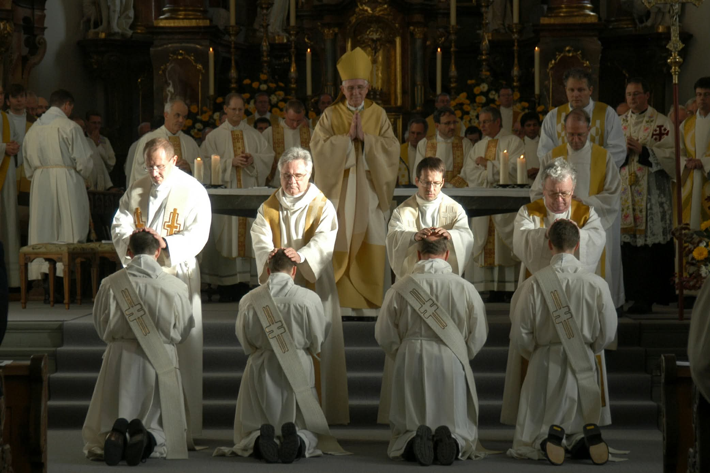

SACRAMENT OF VOCATION
Called to
Serve God
The sacrament of Holy Orders is the religious rite by which a baptized man is ordained to the ministry of the Church as a bishop, priest, or deacon. Through the laying on of hands and a prayer of consecration, the ordained person receives a spiritual power and a permanent call to guide, teach, and serve the Christian community.
Those who receive Holy Orders dedicate their lives to serving Christ and His people. They lead the faithful in prayer, celebrate the sacraments, teach the Gospel, and offer guidance and support to the Christian community.

A life dedicated to serving God and His people.
UNDERSTANDING HOLY ORDERS
What happens in Holy Orders?
Bishops
Bishops receive the fullness of Holy Orders and serve as teachers, shepherds, and leaders of the Church. They guide the faithful and help preserve and proclaim the teachings of Christ.
Priests
Priests serve the Church by celebrating the Eucharist and other sacraments, proclaiming the Gospel, and guiding the faithful. They help people grow closer to God through prayer, worship, and service.
Deacons
Deacons are ordained ministers who serve the Church through works of charity, proclaiming the Gospel, assisting at worship, and helping those who are in need. Their ministry reflects Christ's call to serve others.
Signs and Symbols of Holy Orders.݁
Holy Orders uses important signs and symbols that represent the calling and ministry of ordained servants of the Church.
Laying on of Hands — Represents the transmission of the Holy Spirit and the conferring of the sacrament.
Oil — Symbolizes being strengthened and consecrated for service to God.
Stole — Represents the ministerial authority and service of the ordained minister.
Chalice and Paten — Represent the sacred ministry of celebrating the Eucharist.
WHY IT MATTERS
Holy Orders and the Christian Life
Holy Orders is the sacrament that continues Christ’s apostolic ministry through bishops, priests, and deacons. It connects to Christian life by providing the spiritual leadership, sacraments, and pastoral care necessary to nourish the faith of the community, serving the common baptismal priesthood of all believers.
It grants a permanent spiritual mark, a special outpouring of the Holy Spirit, and sacred authority. It configures the ordained man to Christ as priest, prophet, and king so he can lead and serve the Church.
LEARN MORE
The Sacrament of Holy Orders
Learn more about the Sacrament of Holy Orders.